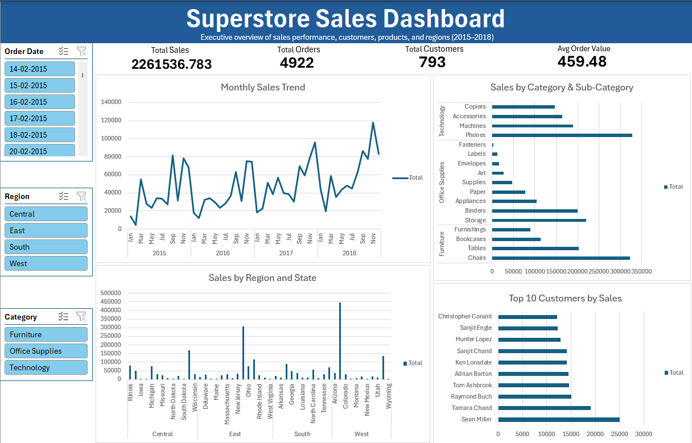

Hi, I'm Aryan Harsh, a data analyst skilled in
SQL, Python, Excel, and Power BI.
I completed my B.Tech in Computer Science & Engineering (CSE)
in 2025.
I work on dashboards, automation scripts, data cleaning, and end–to–end
analytics projects to help solve real-world problems.
You can download my updated resume below:
An end-to-end data analytics project using SQL and Power BI to analyze OLA ride bookings, focusing on revenue, cancellations, vehicle performance, and customer ratings through interactive dashboards.


An end-to-end analytics project using SQL and Power BI to analyze Superstore sales, customer behavior, product performance, and operational efficiency through interactive dashboards.

An interactive Excel dashboard built using Pivot Tables and slicers to analyze Superstore sales performance, customer trends, and regional insights. The project highlights key KPIs, sales trends, category-wise performance, and top customers for data-driven decision making.
In this project, SQL is used to clean and transform raw datasets by identifying and fixing data quality issues such as null values, duplicates, inconsistent formats, and incorrect records. The cleaned data is optimized for accurate analysis and reporting.

An API-driven data analysis project that explores cryptocurrency market trends, market capitalization dominance, trading volume behavior, and short-term price volatility using Python, Pandas, and Matplotlib.